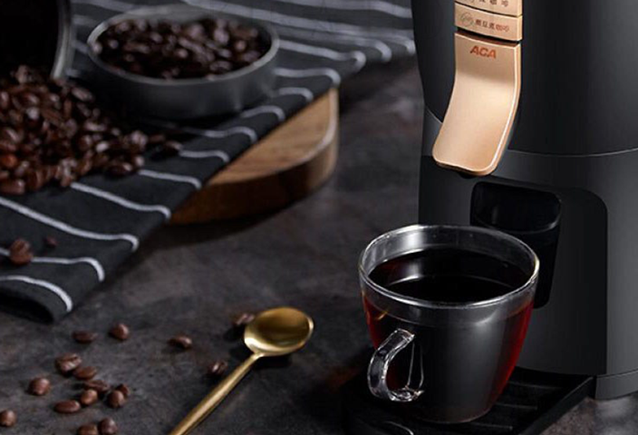
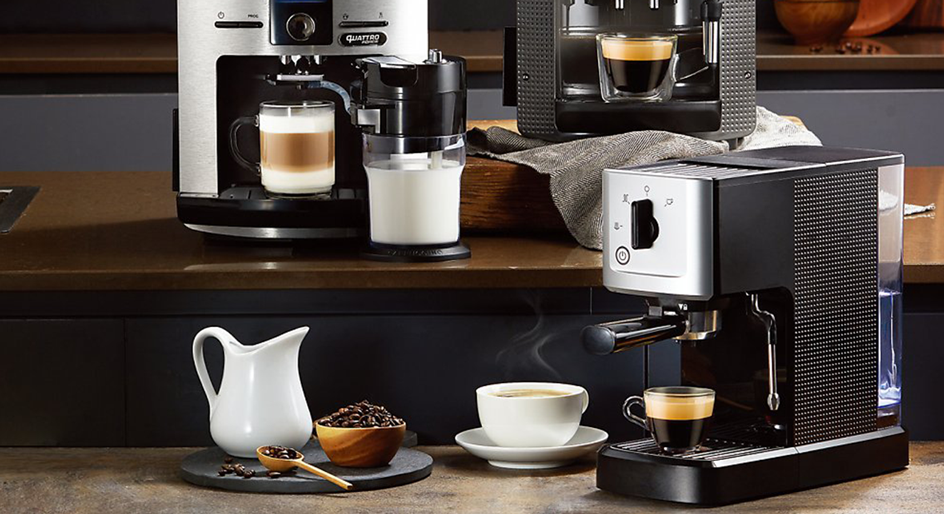

생활을
바꾸는 혁신
테팔
테팔’s STORY
테팔은
무엇을 위해
노력할까요?
테팔이 노력을 기울이는 이유는 간단해요 혁신을 이루기 위해서죠 전과 다름없는주방 모습? 테팔이 원하는 것이 아닙니다 아주 조금이라도 더 편리한 주방기구를 통해 쾌적한 요리시간을 선사하는 것이 테팔의 꿈이자 목표랍니다 테팔이 선사하는 마법같은 요리의 세계에 빠져들어요
STORY 보러가기테팔’s STORY
변화를 위한
노력은 네버엔딩
테팔의 혁신이 담긴 결과는 그냥 만들어지는게 아니랍니다 바로 수많은 소비자들의 생활모습을 끝없이 관찰하고 개선 하기위한 노력이 있었기 때문이죠 이런 노력은 언제까지 계속되냐고요? 더 나은 생활을 사람들이 영위할 수 있다면 언제까지라도 테팔은 연구와 노력을 이어간답니다 그 노력으로 발전하지요
STORY 보러가기

테팔’s 제품
GROUP


테팔의
추천 레시피
맛있는
집밥
캠페인
테팔과
함께해요
매월 셋째 금요일은 테팔 공식 집밥 먹는 날 일명 집밥데이 이날 만큼은 온 가족이 둘러앉아 맛있게 집밥 먹는거에요 테팔로 정성스래 요리한 집밥은 셰프요리만큼 더욱 맛있을 거에요 맛있게 집밥 데이를 즐겼다면 즐거운 저녁식사를 공유해요 페이스북에 좋은 식탁을 업로드
페이스북 바로가기